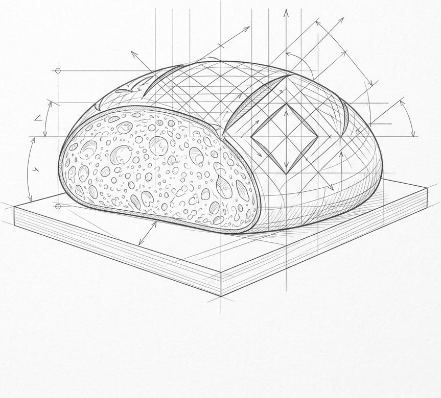

Recipe description

A brief description of the recipe. Space beneath for details.
Mix the flour and water together. Let it rest for 30 minutes.
Add starter and salt. Knead until smooth.
Perform bulk fermentation with stretch-and-folds.
Divide, pre-shape, and bench rest for 20 minutes.
Final shape, transfer to baneton, and cold proof overnight.
Bake in a preheated Dutch oven at 450°F (230°C).